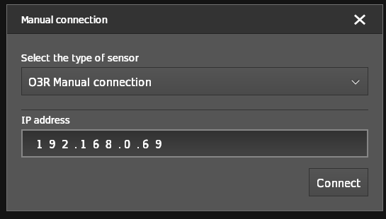
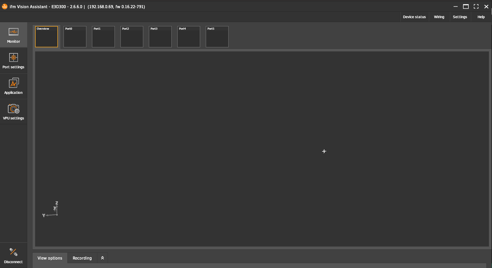
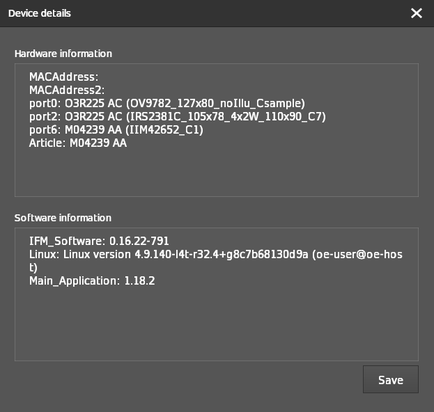
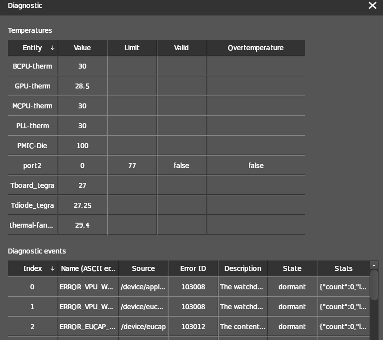

O3R Information for debugging
When sending us debug request please include the information below:
Required O3R system information:
VPU (IPC) hardware information: i.e. OVP800, M03975, M04239
O3R camera hardware: i.e.
O3R225: add serial number
O3R222: add serial number
M03969
M03933
Any additional hardware connected: i.e.
USB thumb drives / SSD
CAN hardware
….
The complete JSON configuration
Required Software version information:
Embedded firmware version: two ways to find this out
Via the JSON: use the get method to receive the O3R configuration information via JSON: ifm3d.com how to receive the camera configuration
Via the Vision Assistant: top right hand corner:

Local (Laptop / Computer) OS: OS and version
ifm3d / ifm3dpy API version
(ifm Vision Assistant version - if iVA is used)
(ROS wrapper version)
HOW to debug the O3R:
The easiest way to debug a new O3R hardware is to use the ifm Vision Assistant: it can be downloaded here
Connect the VPU (OVP8xx) to your computer and edit your local network configuration to match the default static IPv4 of the system
Ping the system to make sure it can be reached:
Open the ifm Vision Assistant:
Connect to the camera:
Option 1: Search automatically - PCIC “search function” used here
Option 2: Connect manually:
CTRL + Mifm Vision Assistant window: after successful connection 
Check the device details: top right hand corner Device Status -> Show device details 
Check the diagnostic information: top right hand corner Device Status -> Diagnostic 
Status LEDs and port LEDs
Starting with firmware version 0.16.x the LEDs at the front of the VPU show the correct system information:
STATE LED:
The STATE LED should be green.
The STATE LED will be red if an ERROR is active the internal diagnosis functionality: The System will set the ERROR state automatically.
PORT LEDs:
Each Port LED is handled separately: If the connected imager (i.e. 2D RGB / 3D TOF imager) is registered and ready the LED will turn green
If the LEDs is off:
The imager / camera is not registered by the system: i.e. connected during live operation. It will only be registered with the next reboot cycle.
The imager / camera cable connectivity is incorrect: i.e. 2D and 3D connected to the same paired deserializer
The imager / cameras calibration information is still getting downloaded after it’s was connected for the first time to this VPU.
For additional possible error cases please check the diagnosis information.
If you can not establish a connection to the VPU via the iVA:
Check the network settings: i.e. try to ping the system on it default / configured IP in a local network
Disconnect all camera heads and power cycle the VPU:
This will allow you to find hardware configuration problems: I.e. camera heads connected to the “wrong” ports Please double-check the configuration doc for details on the hardware connectivity
If step 1 (above) worked try to reconnect one cable at a time to the correct ports as described in the doc above. Please be aware that any hardware change, e.g. connecting a new head, requires a reboot before it will become available.
We are working on more verbose logging and easier to understand error message when connections with the ifm Vision Assitant fail. This document will be update with the new release of the ifm Vision Assistant and O3R embedded firmware release.
Diagnosis information:
Diagnosis information can be retrieved via:
ifm Vision Assistant
JSON via it’s own socket connection: Example:
http://192.168.0.69/api/rpc/v1/com.ifm.diagnostic/?method=get